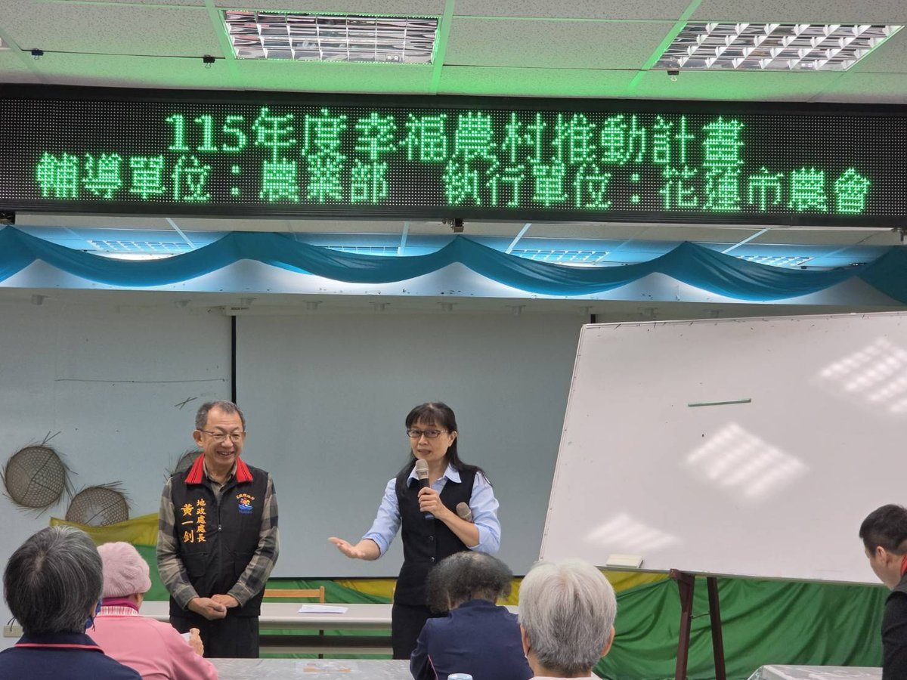

地政知識走入社區 黃一釗授課談不動產權益

可樂電子報小編/編輯
為增進民眾對不動產相關法律及土地權益的認識，花蓮市農會11月25日上午辦理「生活法律－有趣不動產」講習，邀請花蓮縣政府地政處處長黃一釗擔任講師，地政處及各地政事務所同仁也共同參與地政業務宣導，透過課程講授及現場交流，把專業地政知識帶進民眾日常生活，回應社區對土地議題的關注。
縣府表示，這場講習以中高齡女性民眾為主要參與對象，黃一釗以生活化、淺顯易懂的方式，分享不動產相關法律及實務知識，並透過案例說明，讓學員瞭解日常生活中可能遇到的土地及不動產問題，進一步認識自身權益，也釐清常見的繼承順位、共有產權與買賣契約等疑問，讓專業知識變得容易理解。
課程中也安排互動交流時間，讓學員有機會提出疑問，增進對不動產相關議題的理解。與會民眾關心的問題涵蓋土地繼承、產權保障及不動產交易安全等面向，講師逐一回應，並提醒民眾在簽約或處理產權移轉前，務必確認文件內容與自身權益，必要時可向地政事務所洽詢，避免因資訊不足而權益受損。

此外，地政處及各地政事務所同仁配合辦理地政業務宣導，針對各項地政服務及民眾關心的土地議題進行說明，透過面對面解說及互動方式，讓參與民眾更瞭解地政業務內容與相關便民措施，也減少對政府作業流程的陌生感。現場並發送宣導資料，方便民眾帶回家與家人討論。
地政處指出，土地及不動產與民眾家庭財產、生活保障息息相關，尤其土地繼承、產權保障及不動產交易等議題，更是民眾應具備的基本知識。透過此次與花蓮市農會合作辦理講習，讓地政專業走出辦公室、深入社區，把服務送到民眾身邊，也讓鄉親知道遇到問題時可以找哪個單位協助。
地政處表示，未來將持續結合各地政事務所的力量，透過多元宣導方式，提升民眾地政知識及土地權益保障觀念，讓地政服務更加貼近民眾需求。縣府也會依不同族群設計課程內容，把不動產交易安全、繼承登記與產權保障等重要觀念，帶到更多社區與長照據點，讓鄉親在面對土地問題時更有把握。
🌟 掌握花蓮在地第一手資訊・歡迎訂閱追蹤
深度紀實報導、在地精采影音專題，第一時間接收最新消息！